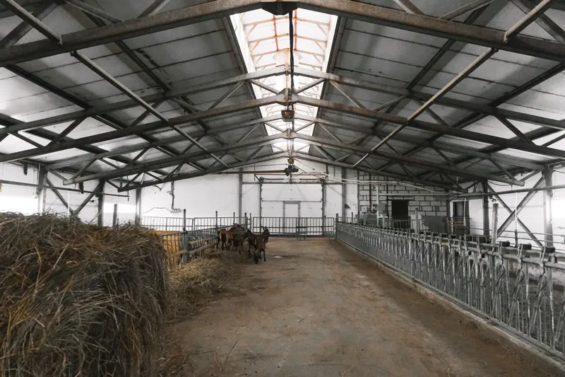

Quick Answers
What does it cost to spray foam a pole barn?
National guides put most pole barn foam jobs between $6,000 and $20,000. Fixr lists $6,000 to $18,000 for a new barn and $8,000 to $20,000 for an existing one, and HomeAdvisor says a large detached barn can reach $20,000. Those are national ranges checked in October 2026, not our prices.
Why can't a pole barn just get fiberglass batts?
There is nothing to hold them. A post-frame wall has no stud cavities, only steel screwed to horizontal girts with wide open bays between the posts, and the roof steel rides on purlins. Foam sprayed onto the back of the steel follows every rib and girt and air seals while it insulates.
What changes when part of the barn becomes a home?
The living area falls under the residential code. Tennessee's amended table calls for R-38 at the ceiling, R-13 in framed walls and R-19 floors in Climate Zone 4, and foam facing the room needs a thermal barrier such as half inch drywall. Some cities run newer codes, so we check with the permit office.
When Pole Barn Foam Makes Sense
- You work in the barn through the winter and want to heat it.
- Hay, feed, tools or vehicles are getting wet from roof drip. Our metal building insulation page explains why steel sweats.
- Part of the barn is turning into a barndominium, apartment or office.
- Old faced fiberglass blanket has been torn up by birds, rodents or wind.
- A new post-frame building is going up and you want foam before liner panels or interior framing.
How It Works on a Post-Frame Building
Post-frame buildings carry their load on posts, with girts running sideways across the walls and purlins across the roof. The steel skin screws to those members, so the bays are wide and shallow and there is no cavity to fill. Foam goes straight onto the back of the steel, and it has to be closed cell.

Roof steel
The roof drips first, so it gets the most attention. A pole building supplier advises 2 inches of closed cell under roof steel. Installers on a spray foam trade forum describe striping along the purlins first and building thickness in two passes so thin panels do not oil can.
Wall steel
Walls get closed cell carried around girts, posts and bracing. Where a barndominium will add framed walls inside, we set the wall thickness with the finished assembly in mind.
Eaves, gaps and doors
The eave gap where wall steel meets the roof gets foamed shut so the roof and wall layers tie together. Foam stops at the frames of sliding and overhead doors, and we seal around the frames we can reach.
Living areas
Rooms framed inside the post grid get insulation sized to the residential code, then half inch drywall or another approved barrier over any foam that faces the room.
Animals and equipment out
Livestock, feed and equipment leave the building during spraying and stay out through the re-entry period. Anything that cannot move gets covered.
Building new? Some builders run a wrap over the girts and purlins before the steel goes on, so a panel can come off later without tearing out bonded foam.
Pole Barn Insulation Cost in Knoxville
Barn size, eave height, door count, foam thickness and old blanket insulation that has to come out set the price. National guides put existing barns above new ones, which fits the extra cleanup and masking around stored equipment.
| Job | National range | Source |
|---|---|---|
| Pole barn, new construction | $6,000 to $18,000 | Fixr, January 2025 |
| Pole barn, existing building | $8,000 to $20,000 | Fixr, January 2025 |
| Large detached barn | Up to $20,000 | HomeAdvisor, June 2024 |
| Closed cell, per board foot installed | $1.30 to $3.10 | Angi, 2026 |
Foam is often priced by the board foot, meaning a square foot at one inch deep. A roof-first job on a 40 by 60 barn covers about 2,500 square feet once the slope is counted, so 2 inches is around 5,000 board feet, or roughly $6,500 to $15,500 at Angi's range. Walls can follow later.
These are national figures checked in October 2026, not our prices. The Knoxville cost guide and spray foam calculator cover more scenarios. Call (865) 564-7823 for a free estimate on your barn.
The East Tennessee Angle
Heating season dominates here. NOAA normals give Knoxville about 3,528 heating degree days and only 1,574 cooling degree days a year, so a heated shop spends far more of the year fighting cold than heat. Summer still bites. The normal July high is 88.4 F, and bare steel overhead makes an afternoon in the barn feel worse.
Barndominium permits go to whichever office covers the address. Unincorporated Knox County uses Knox County Codes, whose 2018 amendments kept R-38 attics, R-13 walls and R-19 crawl space floors. Blount County Development Services and Sevier County Building Inspections handle their rural areas, and the City of Maryville moved to the 2024 IECC on January 1, 2026, with stricter numbers.
What the Free Estimate Includes
We measure the footprint, eave height and roof pitch, count doors and openings, and look at the steel and any old insulation. We ask what lives and works in the barn and whether a living area is planned. The written price breaks out roof, walls and living space so you can phase the work.
Materials and Specs
A post-frame barn has no stud cavities, so the specs split two ways: foam on the back of the steel skin, and code levels once a room inside becomes living space.
| Part of the building | What goes there |
|---|---|
| Frame | Posts carry the load; steel screws to horizontal wall girts and roof purlins, leaving wide, shallow bays |
| Roof steel | Closed cell, about 2 inches per one pole building supplier, striped along the purlins and built up in two passes |
| Wall steel | Closed cell wrapped around girts and posts; 1.5 inches is the minimum one manufacturer gives for an air and vapor barrier |
| Barndominium ceiling | R-38, Tennessee's amended Zone 4 minimum |
| Barndominium walls and floor | R-13 in framed walls, R-19 floors |
| Foam facing living space | A thermal barrier under IRC R316.4: 1/2 inch gypsum, 23/32 inch wood structural panel, or an NFPA 275 material |
| Inside Maryville city limits | The 2024 IECC since January 1, 2026, with higher targets |
Pole Barn and Barndominium FAQ
Related Services
- Metal building spray foam: steel shops, garages and warehouses, with the full condensation explanation.
- Closed cell spray foam: specs for the dense foam used on every barn job.
- New construction insulation: packages for the framed living area of a new barndominium.
Where We Do This Most
- Karns: unincorporated, so barn and barndominium permits run through Knox County Codes.
- Powell: an unincorporated valley community between Copper Ridge and Beaver Ridge.
- Maryville: outlying communities such as Wildwood, Ellejoy and Clover Hill, while addresses inside city limits face the 2024 IECC.
- Sevierville: property outside city limits falls under Sevier County Building Inspections rather than the city.
- Lenoir City: the city requires permits for a change of use, which a barn turned into living space can be.
Send us the barn's dimensions, eave height and how you plan to use it. Call (865) 564-7823 or use the form for a free estimate with a written price for each part of the building.